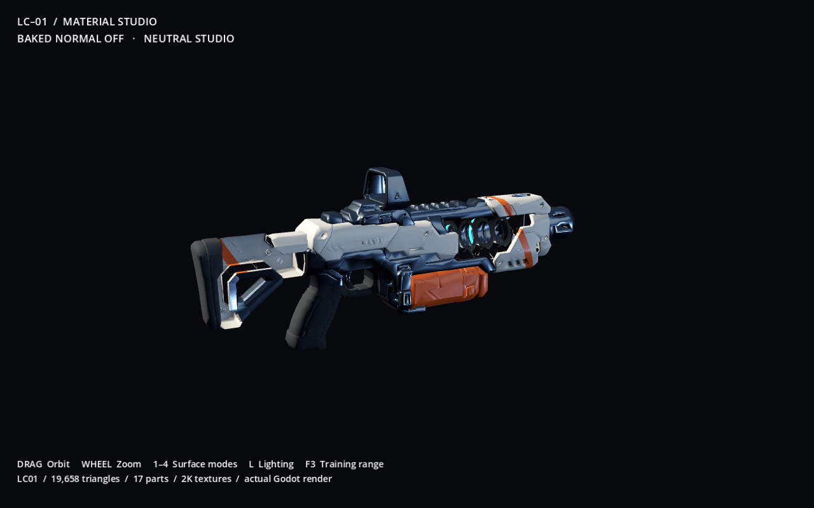
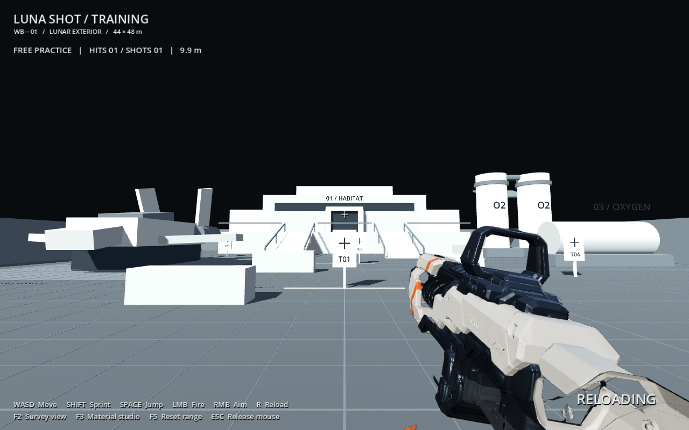
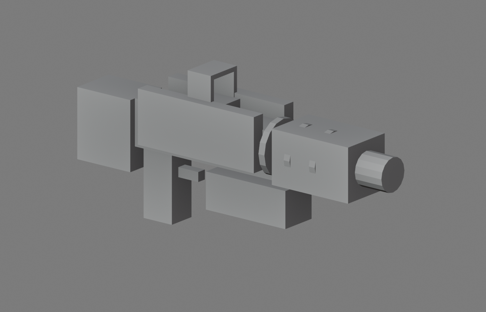
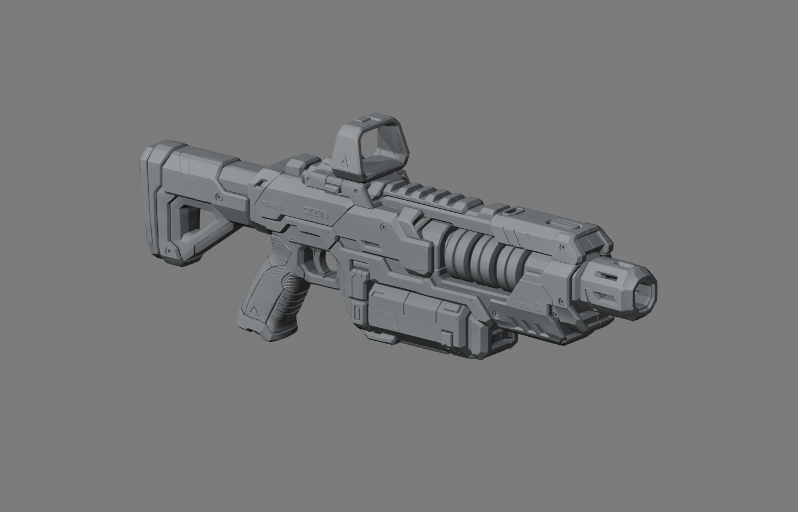
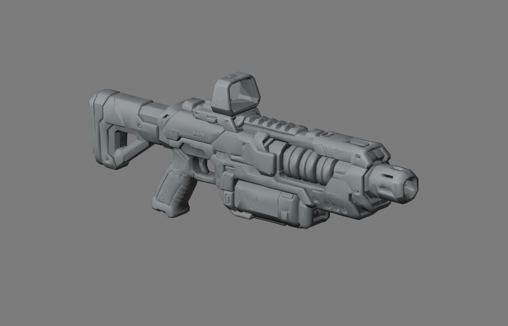
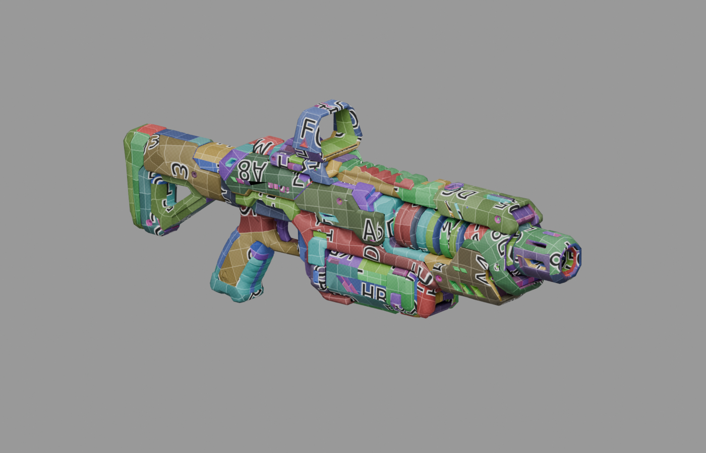

这里展示的是 Godot 4.7.2 原生渲染截图。切换相同相机下的材质与光照，检查变化来自表面响应，而非概念图润色。完整报告、费用与限制

法线恢复了高模上的平面、倒角与凹槽。固定区域中，关闭法线使约 52.6% 像素产生明显变化；统一金属度/粗糙度使约 47.6% 像素产生明显变化。这是参数生效证据，不是画质分数。
瞄具内 3D 红点与软边光效；开镜隐藏 HUD 十字。中心投影误差小于 1 像素。

训练场保持白模，枪械为本轮最终 PBR。右键瞄准、R 换弹。

能源匣主体与侧盖作为同一组移动，回装后恢复弹药。

1600 × 700 原生窗口；瞄具红点仍居中。
下面是 Blender 诊断渲染，明确区别于上方 Godot 实机。B0 为先行白模；B1 是检查生成高模后更新的控制代理。高模来自无材质生成任务，并非由 B1 细分伪造。

B1 控制代理 · 更新光轴和能源匣位置。

H1 清理高模 · 1,934,277 三角面。

L1 固定低模 · 19,658 三角面。

UV checker · 布局有效但碎岛较多、利用率约 22.48%。
整条管线与 Godot 功能验证已完成。自动网格仍有局部折面、凹痕、接缝与模糊刻字；UV 有少量内部重叠采样，尚未做逐面手工重拓扑。该版本是可编辑、可实测的精修基线，不宣称已经达到概念图的最终质量。
运行 launch-weapon-lab.command，或训练场按 F3。检查室内：拖动旋转、滚轮缩放、1–4 切换材质模式、L 切换灯光、F3 返回。
macOS · Apple M5 · Godot Compatibility。训练场原生回归 40/40，枪械原生专项 24/24。短时自动验证，不是长时间性能验收。